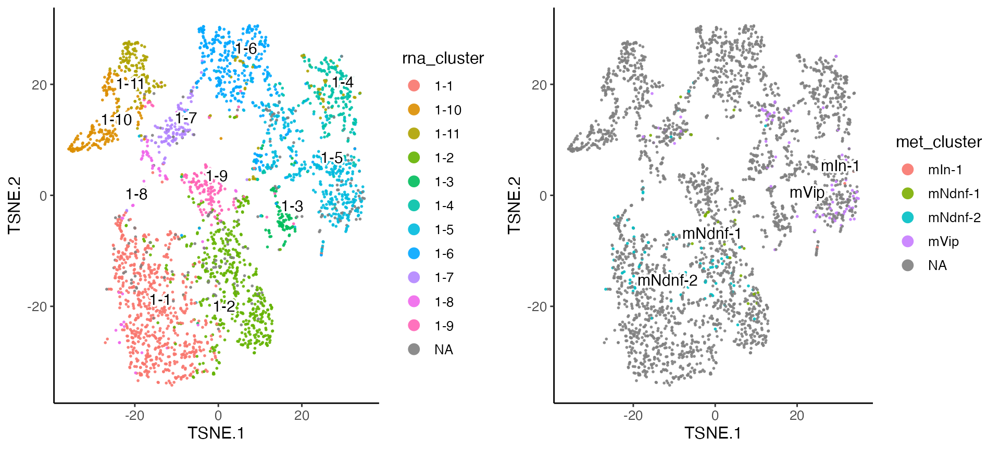

Jointly Defining Cell Types from Single-Cell Gene Expression and Methylation Data Using LIGER
Joshua Welch
4/19/2023
Source:vignettes/rna_methylation.Rmd
rna_methylation.RmdIntroduction
This vignette shows how to use LIGER to jointly define cell types from single-cell gene expression and DNA methylation. We will be using scRNA-seq and single-nucleus DNA methylation data from mouse cortex. These are the same datasets used in our previous paper. The steps involved are quite similar to those for integrating multiple RNA datasets. The only differences are (1) we process the methylation data into gene-level values comparable to gene expression, (2) we perform gene selection using the RNA data only, and (3) we both scale and center the factor loadings before performing quantile normalization.
The full dataset used in the paper is quite large, so in this example, we restrict our attention to inhibitory interneurons derived from the caudal ganglionic eminence (CGE). We downloaded the gene-level methylation data provided by the Ecker lab. They generated these values by dividing the numbers of methylated (non-CG methylation, mCH) and detected positions across the gene body within each cell. They and we found these gene body mCH proportions to be negatively correlated with gene expression level in neurons. The gene expression data is from Saunders et al. 2018. The full dataset is available for download through Dropviz. For convenience, we provide the cells x genes count matrices for only CGE interneurons as well as the original cluster assignment obtained from the study:
Create liger object and preprocess data
We then create a liger object using the methylation and expression data.
library(rliger2)
rna.met <- createLiger(list(rna = rna, met = met), addPrefix = FALSE)Alternatively, we build the importing function to directly pull datasets from online storage and build the liger object.
rna.met <- importVignetteData("cge")The selectGenes() function performs variable gene
selection on each of the datasets separately, then takes the union of
the result. The variable genes are selected by comparing the variance of
each gene’s expression to its mean expression. The
selectGenes() function was written primarily scRNA-seq in
mind, and the methylation data distribution is quite different. So
instead of taking the union of variable genes from RNA and methylation,
we set datasets.use = "rna" in the function to perform gene
selection using only the RNA dataset. Because gene body mCH proportions
are negatively correlated with gene expression level in neurons, we need
to reverse the direction of the methylation data, with function
reverseMethData() with useDatasets = "met".
This function simply subtracts all values from the maximum methylation
value per selected dataset. The resulting values are positively
correlated with gene expression. In addition, the proportional nature of
the gene body methylation makes it unnecessary to normalize and scale
the methylation data.
rna.met <- normalize(rna.met)
rna.met <- selectGenes(rna.met, datasets.use = "rna")
rna.met <- scaleNotCenter(rna.met, useDatasets = "rna")
rna.met <- reverseMethData(rna.met, useDatasets = "met")Factorize and perform quantile normalization
Next we perform integrative non-negative matrix factorization (iNMF)
in order to identify shared and distinct metagenes across the datasets
and the corresponding metagene loadings for each cell. The most
important parameters in the factorization are k (the number
of factors) and lambda (the penalty parameter which limits
the dataset-specific component of the factorization). The default value
lambda = 5 usually provides reasonable results for most
analyses. For this analysis, we simply use k = 20 and the
default value of lambda.
rna.met <- optimizeALS(rna.met, k = 20)Using the metagene factors calculated by iNMF, we then assign each cell to the factor on which it has the highest loading, giving joint clusters that correspond across datasets. We then perform quantile normalization by dataset, factor, and cluster to fully integrate the datasets. To perform this analysis, typing in:
rna.met <- quantileNorm(rna.met)Important parameters of quantileNorm() are as
follows:
-
nNeighbors. This sets the number of nearest neighbors for within-dataset KNN graph. The default is20. -
quantiles. This sets the number of quantiles to use for quantile normalization. The default is50. -
minCells. This indicates the minimum number of cells to consider a cluster as shared across datasets. The default is20. -
useDims. This sets the indices of factors to use for quantile normalization. The user can pass in a vector of indices indicating specific factors. This is helpful for excluding factors capturing biological signals such as the cell cycle or technical signals such as mitochondrial genes. The default is allkof the factors. -
center. This indicates whether to center the data when scaling factors. The default isFALSE. This option should be set toTRUEwhen metagene loadings have a mean above zero, as with dense data such as DNA methylation. -
maxSample. This sets the maximum number of cells used for quantile normalization of each cluster and factor. The default is1000. -
refineKNN. This indicates whether to increase robustness of cluster assignments using KNN graph. The default isTRUE. -
eps. This sets the error bound of the nearest neighbor search. The default is0.9. Lower values give more accurate nearest neighbor graphs but take much longer to computer. -
reference. This indicates the name of the dataset to be used as a reference for quantile normalization. By default, the dataset with the largest number of cells is used.
The quantileNorm() function gives joint clusters that
correspond across datasets, which are often completely satisfactory and
sufficient for downstream analyses. However, if desired, after quantile
normalization, users can additionally run the Leiden algorithm for
community detection, which is widely used in single-cell analysis and
excels at merging small clusters into broad cell classes. This can be
achieved by running the runLeidenCluster() function.
Several tuning parameters, including resolution,
nNeighbors, and prune control the number of
clusters produced by this function. For this dataset, we use a
resolution of 0.2, which yields 26 clusters (see
below).
rna.met <- runLeidenCluster(rna.met, nNeighbors = 30)Visualize results
We run t-SNE on the normalized factors, then color the t-SNE coordinates by dataset and cluster.
rna.met <- runTSNE(rna.met)
plotByDatasetAndCluster(rna.met, useDimRed = "TSNE", legendNCol = 1)
The t-SNE plot shows that the datasets align well and indicates the jointly inferred clusters. Using the original RNA and methylation cluster assignments, we can visually confirm that the joint analysis is highly consistent with the single-modality analyses.
First, we insert the original cluster assignment into “cellMeta” variables.
rna.met$rna_cluster <- NA
names(rna.met$rna_cluster) <- colnames(rna.met)
rna_clusts <- rna_clusts[names(rna_clusts) %in% colnames(rna.met)]
rna.met$rna_cluster[names(rna_clusts)] <- as.character(rna_clusts)
rna.met$rna_cluster <- factor(rna.met$rna_cluster)
rna.met$met_cluster <- NA
names(rna.met$met_cluster) <- colnames(rna.met)
met_clusts <- met_clusts[names(met_clusts) %in% colnames(rna.met)]
rna.met$met_cluster[names(met_clusts)] <- as.character(met_clusts)
rna.met$met_cluster <- factor(rna.met$met_cluster)Then, we can visualize with these variables. Note that “NA” values on the plot indicate the cells belong to the other dataset.
rnaPlot <- plotClusterDimRed(rna.met, useCluster = "rna_cluster", useDimRed = "TSNE", legendNCol = 1)
metPlot <- plotClusterDimRed(rna.met, useCluster = "met_cluster", useDimRed = "TSNE")
cowplot::plot_grid(rnaPlot, metPlot)
Plotting marker genes for subtypes of CGE interneurons confirms that the data types are properly aligned, with the expected inverse relationship between gene body mCH and gene expression.
plots <- plotGeneDimRed(rna.met, c("Vip", "Lamp5"), useDimRed = "TSNE", splitBy = "dataset",
titles = c(names(rna.met), names(rna.met)))
cowplot::plot_grid(plotlist = plots, nrow = 2)